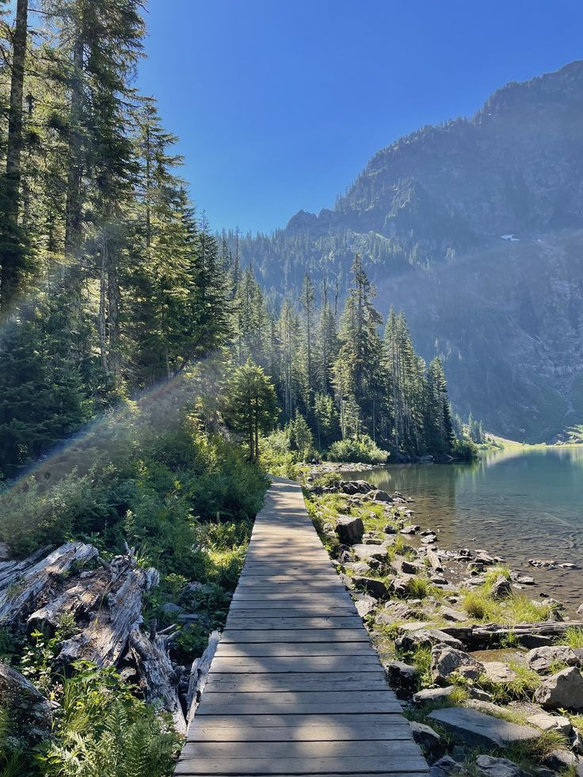
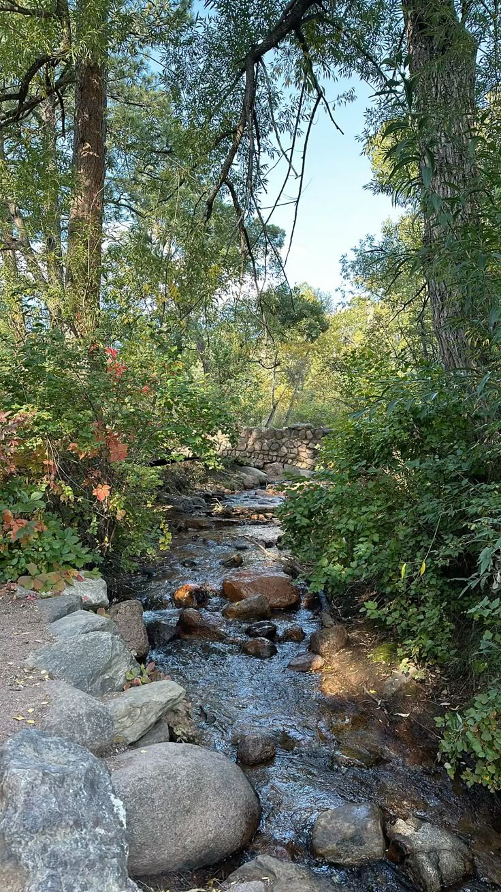
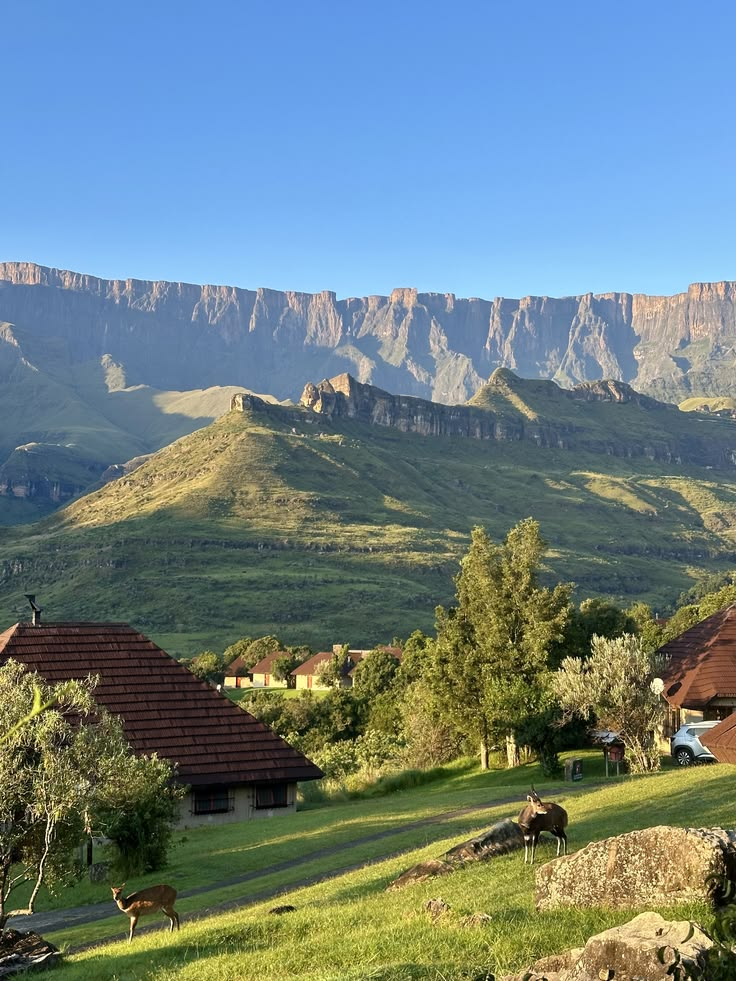

Protecting the trails of the Mpumalanga escarpment
Longtom Trails Conservancy is a community-led non-profit restoring and maintaining the hiking trails around Long Tom Pass through volunteer clean-ups, education, and sustainable eco-tourism.
Who we are
Founded in 2022 by a small group of local hikers, Longtom Trails Conservancy has grown into a registered non-profit with over 40 active volunteers. We exist to protect the escarpment's trail network from erosion, littering, and unsafe off-road use — while keeping trails open, safe, and well-mapped for the hikers, trail runners, and eco-tourists who love this landscape as much as we do.
Explore Our Trails
A taste of what's on offer — see the full directory with difficulty filters on the Trails page.

Dullstroom Wetland Trail
View trail
Long Tom Pass Loop
View trail